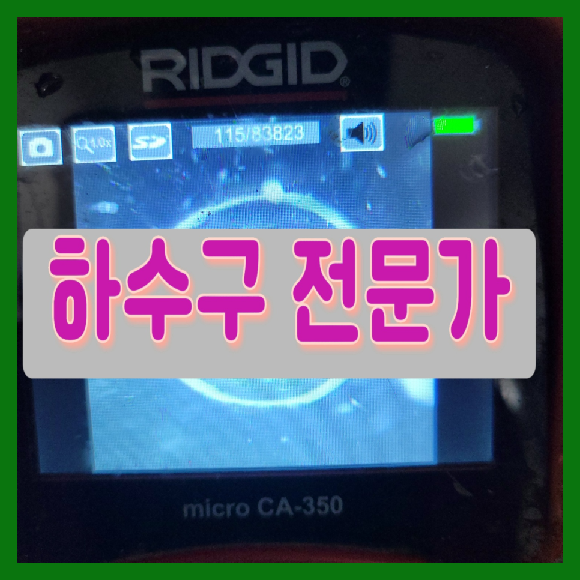
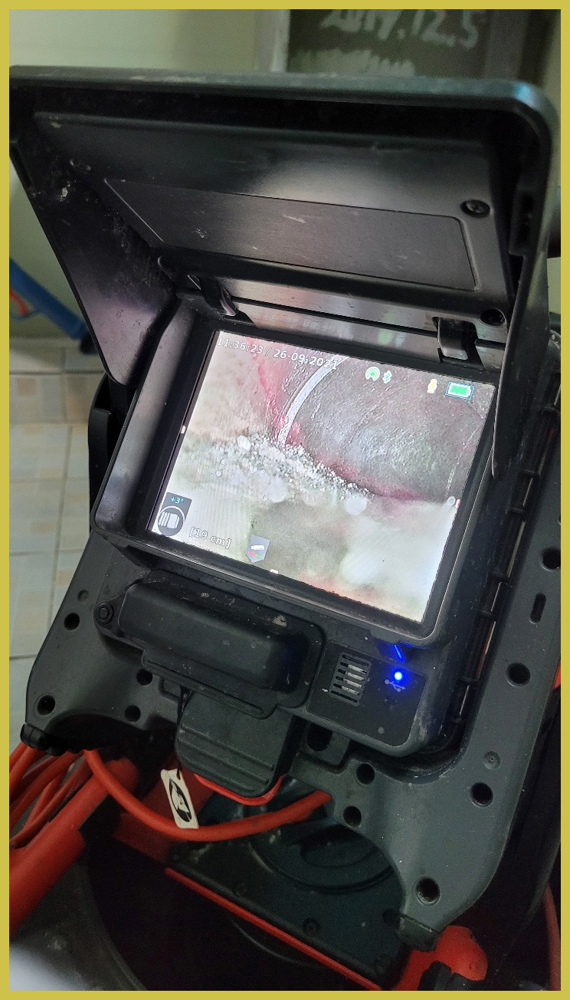
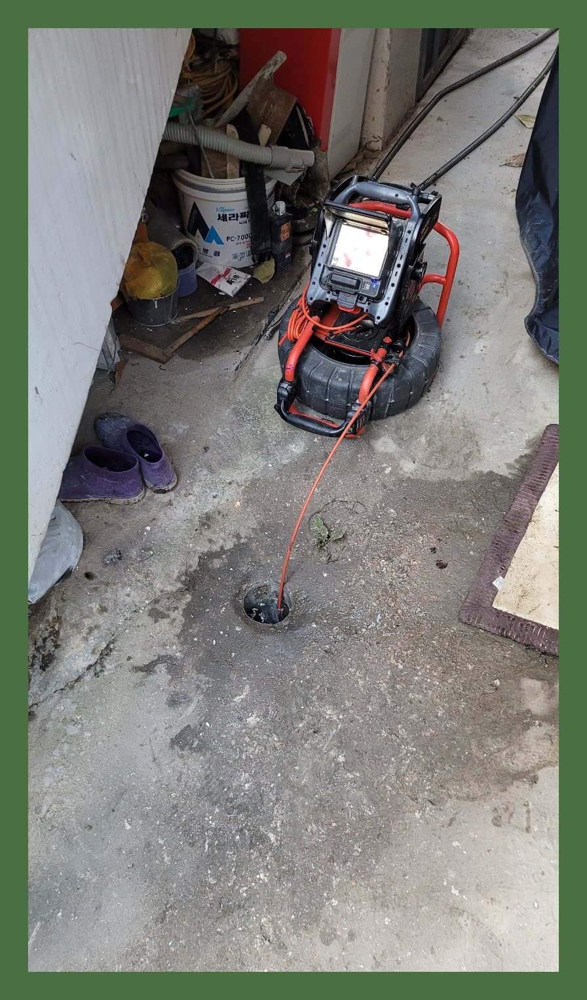
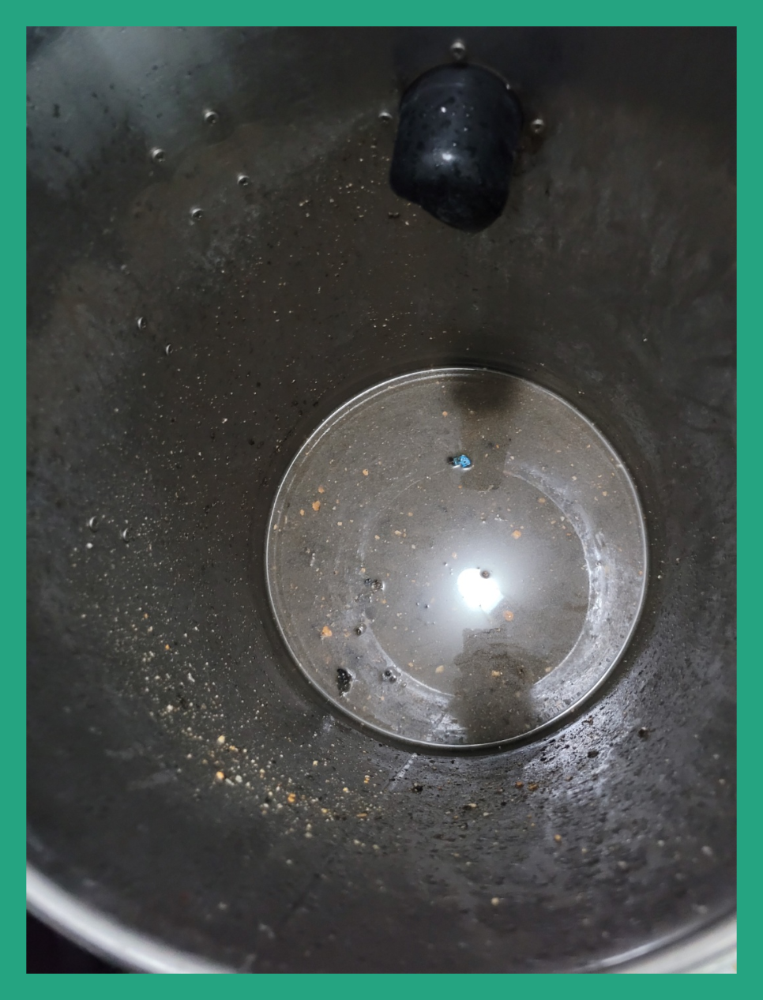
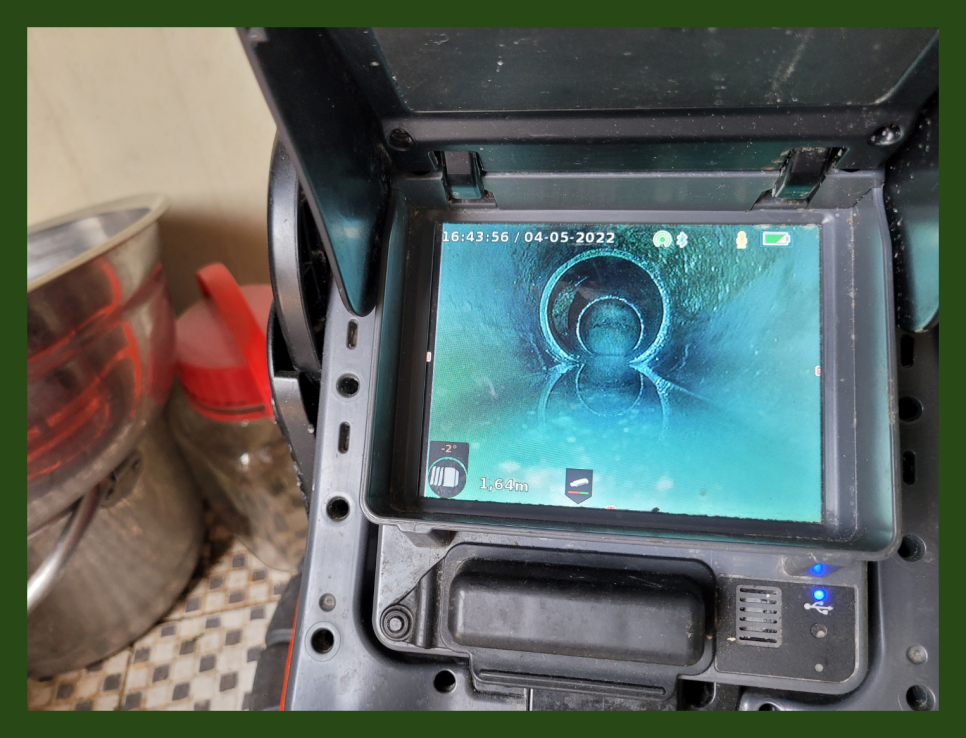
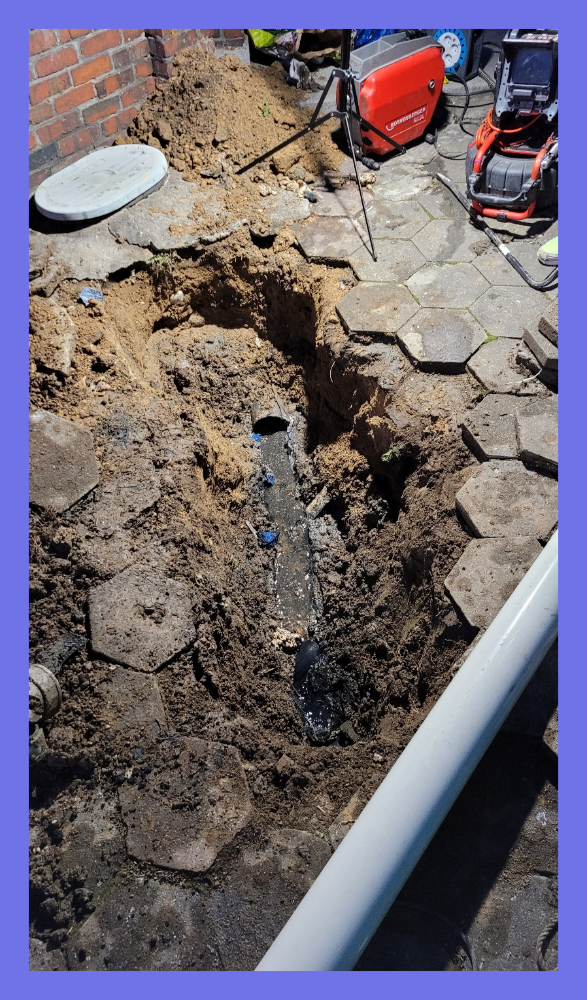
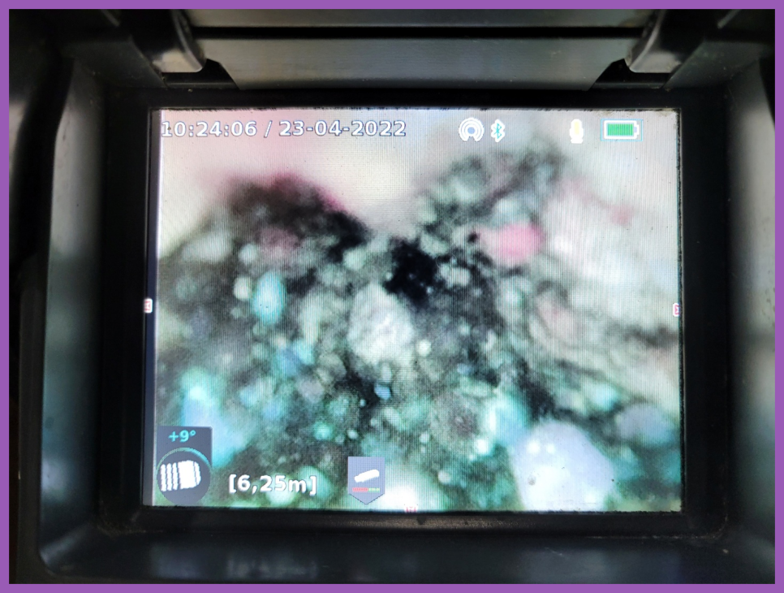

🏠 아산 온양동 하수구막힘 뚫음 화장실하수구뚫는곳 배관설비
아산 싱크대막힘 전문 시공 후기

📋 작업 개요
- 위치: 아산
- 서비스 유형: 싱크대막힘, 변기막힘, 하수구막힘, 배관막힘, 역류해결, 뚫는업체, 배관청소, 고압세척
- 작업 일시: 2023. 11. 17. 19:37
- 업체명: 하수구수사대 (010-5615-2118)
🔍 문제 상황
반갑습니다!
설비전문업체 "하수구수사대"를 찾아주셔서 감사드려요^^
여러분들이 살아가면서 정말 필요한 배수구 설비시설을 변기,싱크대,세면대 등 물을 사용하는 공간이 아닐까 생각합니다.
조급한 나머지 무조건 행동을 취하고 다양한 업체를 찾아보고 이러다 보면 시간이 더 지연되어 상태가 좋아지기보다 악화되는 경우도 생깁니다.퇴수 이럴때는 고민만하지 마시고 전문가에게 곧바로 문의하시길 추천드려요.

🔎 원인 분석
💡 전문가 진단: 정밀 진단 장비를 사용하여 슬러지의 고착 여부를 판명하고 타격/세척 작업을 실시했습니다.
여러 배관가 물이 안통할 만큼 막혔다면 어떤 장비로 해결을 해야 할까요? 어떤 상태인지에 따라 방법과 장비가 달라지는데요 이물질의 모양이 예상한 것보다 부드럽고 조금 막혀있다면 약품을 여러번 부어서 없애는 방법도 있지만 쉽게 뚫리지 않는 경우도 있습니다.
믿고 부른 업체가 제대로 뚫었다며 철수했는데 얼마 지나지 않아 똑같은 증상이 재발하는 경우도 어렵지 않게 볼 수 있습니다, 양심적인 하수업체라면 이럴 때 다시 찾아가서 뚫어주어야 하는 것이 맞습니다.
얼마 전 다녀왔던 현장은 혼자서 하수관뚫어보시려다가 한참을 노력해도 해결이 되지 않아 전문 업체를 찾게 되셨다고 하는데요. 방문 드렸던 현장은 자주 막힘 증상이 보였던 곳이고 뚫은지 얼마 안 된 상태에서 또다시 문제가 발생해 확실한 해결을 원하셨습니다.
이럼으로 인해 하수장비를 얼마나 갖추고 있는지 면밀히 알아보세요. 점성이 있는 기름때들은 소량일지라도 하수관 안에 남겨두게 되면 쌓이기 시작해서 소량이었던 것이 증식해 버리게 되어 틀어막게 되는 것인데요.
그래서 자세한 상황을 알아보기 위해서 우선 배관 내시경을 통해서 내부에 달라붙어 있는 이물질과 찌꺼기들 그리고 기름 덩어리들을 확인을 하였습니다. 배수관 내부에 있는 이물질들을 확인을 한 후에 본격적으로 배수관막힘을 해결하는 작업을 시작하였는데요.

🔧 작업 과정
오랜 시간 하수배관을 따라 흘러내려간 이물질들이 쌓이고 쌓여 단단하게 고착화되었을 확률이 높았습니다. 일단 고여있던 물을 어느 정도 없앤 뒤, 내시경 카메라를 하수 배관 쪽으로 넣어 작업에 돌입하였습니다.
배관전문업체를고르시는게 어째서 꼼꼼해야되냐면 제대로뚫기위해서인데요.의뢰하신업체가 잘못하는곳이면 대충보기만하고 가버리고 잠시동안 물이흐르게하고 나몰라라하기도해요.
저희는 배출구 종합설비회사기에 뚫기만하는것이아니라 배관설비에관해서도 해결하고있어요.심각한냄새까지 저희들이해결 해드리고있어요
간혹 무리하게 배관을 건드렸다고 오히려 간단하게 끝날 작업도 오래걸리고 오래된 하수관배관의 경우 배관 이탈 등의 문제로 인해 큰 작업이 되기도 한답니다. 단순막힘이 아닌 공용관이나 가지관 깊은곳에 슬러지로 인해 하수관 역류문제가 발행했다면 혼자서는 절대 해결할수 없는 문제입니다.
이해가능한 견적비용으로 꼼꼼하게 본다음에 수긍가능한 견적가를내고있어서 고민을크게 하지않아도돼요.가령 생각해보고싶으시다면 나중에문의 하셔도됩니다 매번얘기해드리고 퇴수구 뚫고있어서 돈에관한부분은 안심하셔도괜찮아요.
엄청난 큰 돌이 끼어있었는데 완벽히 제거된 것은 물론이고 배수관벽면에 붙어있던 누런 때까지 사라진 모습에 놀라신 고객님이 감탄을 하셨는데요. 고압세척기의 힘이 아닌 장비 컨트롤만으로 일일이 이물질을 제거해낸 저희들의 솜씨를 직접 확인해 보실 수 있습니다.
그동안 인천 서구 화장실 퇴수 막힘 현장에 석회가 형성되는 과정에서 생활하며 배출된 머리카락 또한 엄청난 양으로 굳어있었던 모양입니다.
의뢰하기 전에 걱정하실 만한 것은 아마 배관뚫는 금액 부분일 것입니다. 얼마가 필요할지 가늠이 안되는데 의뢰하기에는 겁이 나기 때문에 멈칫하실 수 있으십니다. 이를 알기에 유선상으로 안내해 드립니다.


✅ 작업 완료
더 자세한 점은 전화상담이나 문자를 통해 남겨주시면 곧바로 상담을 도와드려 궁금증도 해결해 드리고 하수관현장 방문이 필요하실 경우 평일, 주말 상관없이 언제든 방문을 도와드리겠습니다
#하수구막힘 #하수구뚫음 #하수구역류 #씽크대막힘 #싱크대역류 #오수관막힘 #하수구청소 #욕실하수구막힘 #변기막힘 #하수구뚫는비용 #싱크대수리 #화장실막힘




⚠️ 주방 싱크대 배관 막힘 예방 수칙
- ✅ 기름기가 묻은 식기나 프라이팬은 설거지 전 키친타올로 반드시 기름때를 닦아내세요.
- ✅ 주기적으로 싱크대 개수대에 뜨거운 물을 가득 받아 한 번에 내려 배관 내부 기름을 씻어내세요.
- ✅ 배수구 거름망을 미세한 필터로 사용하시고 음식물 찌꺼기가 틈으로 새어 들지 않게 관리하세요.
- ✅ 베이킹소다와 식초를 뜨거운 물과 함께 일주일에 한 번씩 부어주면 배관 살균과 막힘 예방에 좋습니다.
💡 핵심 정리
- 확실한 장비 작업(내시경 점검 및 샤프트 스케일링)으로 원인을 뿌리 뽑습니다.
- 작업 후 1년 이내에 동일한 부위 재발 시 100% 무상 A/S 서비스를 보장합니다.
- 서울 · 경기 · 인천 전 지역에 24시간 언제든 긴급 출동할 수 있도록 항시 대기 중입니다.
❓ 자주 묻는 질문 (FAQ)
🚨 아산 싱크대막힘 문제로 고민이신가요?
정확한 원인 진단과 확실한 시공으로 재발 없는 해결을 약속드립니다.
24시간 긴급 출동 | 서울 · 경기 · 인천 전지역 | 1년 내 재발 시 무상 A/S